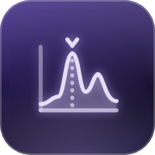

Töne sichtbar machen – Spektrum, Stimmgerät und Tongenerator. 100% lokal, keine Aufnahme.
Zeigt, welche Tonhöhen gerade erklingen – von tiefem Brummen bis zum hellen Zirpen. Der Ton wird nur live ausgewertet, nie aufgenommen oder gespeichert.
Oben läuft das Klangbild von oben nach unten durch: Jede Zeile ist ein Augenblick, links sind tiefe, rechts hohe Töne. Je heller, desto lauter. Ein gleichmäßiger Ton zeichnet eine senkrechte Linie, eine Vogelstimme schnelle Bögen, Sprache viele waagerechte Streifen. Unten siehst du das aktuelle Spektrum.
Halte das Instrument nah ans iPhone und zupfe oder streiche eine Saite einzeln. Liegt der Ton innerhalb von ±3 Cent, leuchtet die Anzeige golden. Ein Cent ist ein Hundertstel Halbton; Abweichungen unter ±5 Cent hört kaum jemand.
Erzeugt einen reinen Ton zum Ausprobieren: Wie klingt 50 Hz, wo liegt das hohe C, welche Töne höre ich noch?
Gemerkt werden nur Zahlen (stärkste Frequenzen, Pegel, Zeitpunkt) und ein kleines Spektrum-Bild – keine Tonaufnahme.
Das Mikrofon des iPhones ist nicht kalibriert und filtert sehr tiefe und sehr hohe Töne. Pegel in dBFS sind relativ zum lautesten möglichen Signal, keine Schalldruckpegel. Für Lautstärke in Dezibel gibt es LautstärkeWahr. Frequenzen werden dagegen recht genau erkannt – im Stimmgerät auf etwa einen Cent.
Version 1.0 · Stand 10/2026 · Teil der WahrZentrale